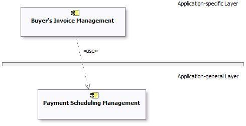
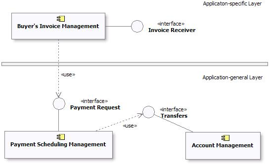

|
Цель:
|
Описать интерфейсы, от которых зависит подсистема.
|
Зависимостью между подсистемами называется ситуация, когда элементы одной подсистемы пользуются поведением элементов
другой подсистемы. Для упрощения повторного использования подсистем и сокращения зависимостей при обслуживании
зависимости следует привязывать к конкретным интерфейсам подсистем, а не к подсистемам в целом и не к их
внутренним элементам.
Причин тому две:
-
Элементы модели (включая подсистемы) должны быть взаимозаменяемы при условии, что их поведение одинаково. Поведение
описывается в терминах интерфейсов, поэтому любые обстоятельства, от которых зависит поведение элемента, также
должны быть описаны в терминах интерфейсов.
-
У разработчика должна быть полная свобода в отношении внутреннего поведения подсистем, постольку поскольку
обеспечивается правильное внешнее поведение. Если элемент модели одной подсистемы ссылается на элемент модели
другой подсистемы, разработчик уже не может просто удалить этот элемент модели или распределить его поведение на
другие элементы. В результате система становится более "хрупкой".
Необходимо обеспечить отсутствие прямых зависимостей и связей между элементами модели, находящимися в подсистеме, и
элементами модели, находящимися в других подсистемах. Кроме того, нужно убедиться в отсутствии циклических зависимостей
между подсистемами и интерфейсами: система не может одновременно и предоставлять интерфейс, и зависеть от него.
Зависимости между подсистемами, равно как зависимости между подсистемами и пакетами, можно описать напрямую, как
показано ниже. В данном случае одна подсистема (например, Invoice Management) напрямую зависит от другой (например,
Payment Scheduling Management).

Пример структуры подсистем с непосредственными зависимостями.
Если одну подсистему потенциально можно заменить другой (у подсистем один и тот же набор интерфейсов), можно привязать
зависимость к интерфейсу, предоставляемому подсистемой, а не к самой
подсистеме. Такой подход обеспечивает взаимозаменяемость любых элементов моделей (подсистем и классов), предоставляющих
одни и те же интерфейсы. Управление зависимостями между интерфейсами позволяет разрабатывать гибкие среды с большой
свободой взаимозаменяемости элементов.

Пример структуры подсистем с зависимостями через интерфейсы
|